|
Миллионы лет человекоподобному существу. Сотни тысяч лет современному человеку. Тысячелетия Бога и вождей, столетия гражданских сообществ и десятилетия ценностно-ориентированных людей и менеджеров глобального устойчивого развития. |
В середине XVIII века Петербургская Академия наук представила правительству сведения о хищническом уничтожении лесов в Центральной России. Вышел указ о закрытии ряда предприятий ближе 200 верст от Москвы. Среди них значился и стекольный завод Акима Мальцева в Можайском уезде. Поиски нового места привели заводчика в Мещеру. Здесь, на речке Гусь в 1756 году пустил он свой новый завод. Земля завода получила название Гусь-Хрустальный - по реке и по делу, которое "работали". Статус города поселок хрустального завода получил в 1931 году.
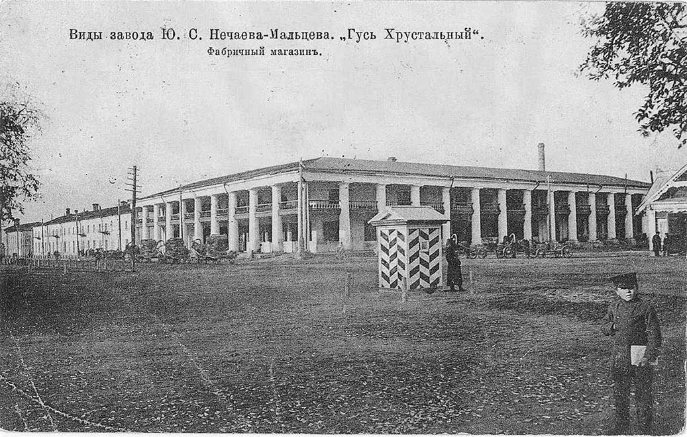
Посмотреть старые фото города можно здесь
Для меня центральным местом города после того, как я поступил в местный стекольный техникум был Собор Георгия Победоносца.
В. Добронравов в «Историко-статистическое описание церквей и приходов Владимирской епархии» в 1897 году отметил писал. В настоящее время довольно обширный Троицкий храм стал тесен сравнительно с числом жителей, поэтому на окраине завода в 1892 году заложен новый храм, рассчитанный на 3000 богомольцев. Храм строится по проекту академика Бенуа. В настоящее время каменные работы окончены и на главы храма подняты кресты. Иконы для иконостаса и живопись на стенах храма будут работы известного художника Васнецова. Таким образом этот фабричный городок, выросший в глухом углу Меленковского уезда, в скором времени украсится таким величественным и художественно отделанным храмом, который сделал бы честь и столице. На построение и украшение храма настоящим владельцем Гусевского (хрустального) завода Юрием Степановичем Нечаевым-Мальцевым ассигновано до полумиллиона руб.
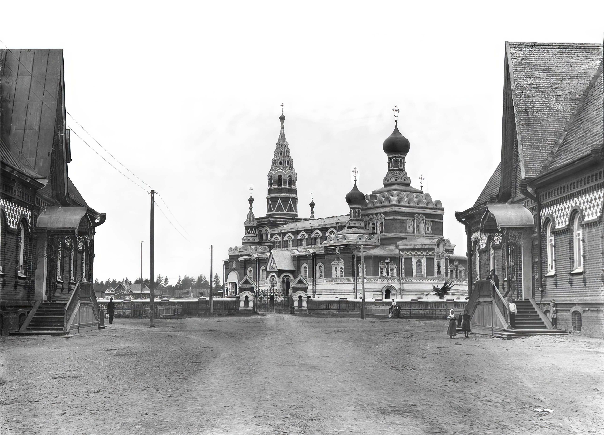
Обновлённое фото Георгиевского собора и зданий Мужского училища.
Церковный храм был задуман в конце 80-х. Умеющий ценить основательность и красоту, Юрий Степанович не остановился на типовой провинциальной церкви. Проект храма святого Георгия был заказан известному русскому архитектору Леонтию Николаевичу Бенуа , автору усыпальницы высочайших особ при Петропавловском соборе в Санкт-Петербурге, костёла французского посольства, банков на Невском проспекте, зданий в Петергофе и других известных строений. Сам Бенуа позже напишет так: "... в этот храм я вложил всё, что мог, и может быть, он останется лучшим из моих творений". На строительство Георгиевского собора Юрий Степанович выделил 560 тысяч рублей золотом. Величественный собор был строился в период с 1892 по 1903 гг. Правда, сам Бенуа лишь время от времени приезжал в Гусь, непосредственное руководство строительством вёл архитектор Георгий Яковлевич Леви. Воздвигали храм местные владимирские мастера, работу которых Бенуа сравнивал с мастерством лучших европейских каменотёсов. Здание было спроектировано так, что в нём одновременно соединились традиции как западноевропейской, так и русской архитектуры. 25 мая 1892 года состоялась закладка этого грандиозного сооружения - собора во имя Георгия Победоносца с приделами в честь Иоанна Богослова и святой мученицы Софии на 3000 прихожан. Через пять лет (1897) основные строительные работы были завершены, хотя отделка храма заняла ещё некоторое время. По первоначальному замыслу Л. Н. Бенуа, собор намеревались расписать клеевыми красками с позолотой по готовой штукатурке. Но заказчик доверил роспись храма профессору живописи В. М. Васнецову. Для Георгиевского собора в Гусе Виктор Михайлович стал писать композиции маслом не по штукатурке, а на холсте. Здесь ему были заказаны: "Страшный суд", "О тебе радуется, Благодатная", "Евхаристия", "Сошествие во ад", "Распятие". Восемь лет работал Васнецов над росписями Георгиевского собора, для чего ему было выделено одно из помещений Исторического музея в Москве. С 1904 по 1910 гг. готовые произведения с огромным успехом экспонировались на нескольких выставках и только весной 1910 года были доставлены в гусевский храм. Три эмалированных бронзовых иконостаса были изготовлены по эскизам Васнецова в 1897 году московским товариществом Постникова. Ранее эта же фирма выполнила для Георгиевского храма кресты и купола. Кто писал образа для иконостаса, до сих пор не совсем ясно. Они явно не принадлежали кисти Васнецова, о чём художник неоднократно заявлял сам. Васнецов в своём письме А. В. Прахову указывает, что образа в иконостасе исполнены в какой-то московской мастерской. Установкой же икон в 1900 году занимались мастера от придворного поставщика П. А. Овчинникова, фабриканта серебряных, золотых и бриллиантовых изделий. Ими же были выполнены заказная лампада и металлические ограждения у престола и жертвенника Георгиевского алтаря.
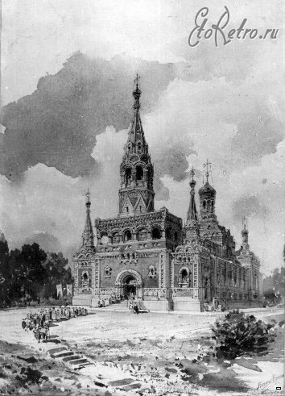
В 1901 году хозяин гусевских фабрик, большой поклонник композиций из цветной смальты, заключил контракт с академиком-мозаистом Александром Николаевичем Фроловым, в котором мастер обязался выполнить и сдать работы на месте не позднее 1 сентября 1902 года. Несмотря на то, что контракт был подписан академиком, непосредственным исполнителем работ был его сын В. А. Фролов. Однако мозаичные работы для Георгиевского собора выполнялись не только в мастерской Фролова. Изображения великомученика Георгия и евангелиста Иоанна на фронтонах боковых крылец выполнены по рисункам профессора Васильева в мозаичной мастерской Академии художеств.
23 августа 1899 года на звонницу Георгиевского собора были подняты колокола. По рисункам Бенуа московский слесарный мастер Неборг изготовил металлические кованые ворота и калитку для ограды. Для главного и боковых входов в храм, в Москве были выполнены фонари в русском стиле, а для освещения алтаря установлен ряд электрических огней на задней стене иконостаса. Когда храм был готов к освящению, хозяин своим желанным гостям разослал такое приглашение: "2 сентября 1901 года храмоздатель Юрий Степанович Нечаев-Мальцов просит Вас покорнейше почтить торжество своим присутствием. Начало обряда освящения имеет быть в 9 часов утра...".
Георгиевский собор в 1913 году. Картина неизвестного художника на почтовой открытке.
Примерно так проходило освящение и последующие службы в храме.
По случаю торжества освящения в Гусь, кроме церковного и светского начальства, прибыли академик архитектуры Л. Бенуа, академик живописи П. Чистяков, академик-мозаист В. Фролов, профессор Петербургской Академии художеств В. Васнецов, русский историк, профессор Московского университета Иван Владимирович Цветаев и другие. Приглашённых гостей встречал сам владелец фабрики Ю. С. Нечаев-Мальцов и его родственники.
На освящении храма в 1904 году хозяина Гусевской хрустальной фабрики Юрия Степановича Нечаева-Мальцова (1834-1913) спросили гости, почему он не пожалел огромных денег для украшения фабричной церкви в глуши Владимирской губернии. "А отчего стоит город Орвието в Италии? Для его собора ездят иностранцы издалека. Будет время, когда художники и ценители русского искусства станут ездить и на наш Гусь..." - отвечал Ю. С. Нечаев-Мальцов.
Однако в России большевики устроили государственный переворот и в 1923 году в соборе прошли последние службы.
По приказу большевиков местные активисты снесли купола, вывесили красные флаги, назвали оставшееся сооружение дворцом труда имени Троцкого, а на праздник открытия пригласили Калинина. Вскоре в честь всероссийского старосты переименовали Софийскую и Юрьевскую улицы. Сами местные комиссары расположились в богадельне при храме и указали адрес - дом №1, а дворцу труда присвоили адрес дом №2 по улице Калинина. Во Владимирской области не было боевых действий Гражданской войны, но после войны в области выявили 10 822 несогласных: из них Советы расстреляли 1816 человек. К “политическим” следует добавить и 3 тысячи раскулаченных в 1929–1931 годах. https://bessmertnybarak.ru/article/istoriya_repressiy_vo_vladimirskoy_oblasti/ )

Фото привокзальной улицы Гусь-Хрустального 1913 года. Купола Георгиевского собора ещё не снесены, новые дома, дети и чистый воздух наступающего лета радуют глаз.
Гусь-Хрустальный в начале ХХ века был вполне благополучным поселением.
Для ткачей и мастеров стекла были созданы все условия, чтобы креститься, учиться, венчаться, вести здоровый образ жизни и работать, пользоваться храмом, училищем, больницей и богадельней, а в конце жизни после красивого отпевания и многократных обещаний родни, коллег и земляков в вечной памяти в часовне Святой Варвары представившегося предавали земле в золотистом песке Мещёры.
Однако замыслы основателей города и посулы родни не сбылись, революционеры мобилизовали население на мировую гражданскую войну за светлое будущее, похожее на рай земной. Прошло более 100 лет, да конца-края этой борьбы и сегодня не видно. Надеюсь, что в 21 веке люди разберутся со своим будущем.
По моему мнению, после Французской революции в мире началась активная фаза Мировой гражданской войны, вызванная ускоренным переходом трудящихся под руководством многих революционных партий от империй и монархий к гражданским обществам.
Военные действия на территории города не проходили, но разрушения были существенными.
Культ победы большевиков, подменивший демократическую трансформацию подданных в граждан после ареста Временного правительства, разгона Учредительного собрания и гражданской войны не способствовал гражданскому миру. Население задержалось в состоянии полу подданных, полу граждан со смутным смыслом коммунизма впереди.
После Второй мировой войны в условиях холодной фазы Мировой гражданской войны однопартийная система обросла приспособленцами. Бюрократия, заточенная на мировую революцию пролетариата всех стран, тормозила научно-технический прогресс, солидарность и развитие справедливости в обществе; население стало опасно пассивным и опасным друг другу..
Эта ускоренная трансформация национальных государств в развитые гражданские общества проходила с трагическими ошибками, заняла весь ХХ век - век войн и революций и начала завершаться в наше время.
Надеюсь, что уроки прошлого усвоятся, хотя бы активными слоем населения, и завершающая фаза трансформации обойдётся без глобальной войны.
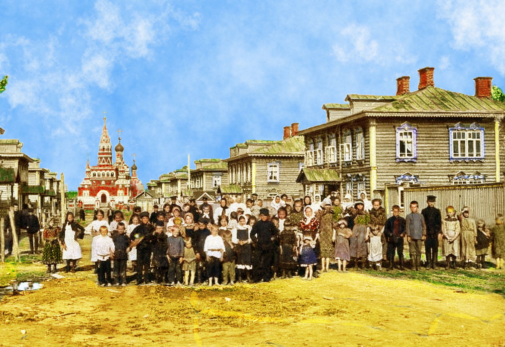
По состоянию на апрель 2020 года Георгиевский собор в Гусь-Хрустальном не восстановлен, а кое-какие оставшиеся дома догнивают возле заасфальтированной в 60-х годах дороги к храму. Дорога к храму и территория вокруг него беспорядочно заросли деревьями и обезображенный храм можно разглядеть только вплотную.
Интересно, как выглядела бы эта дорога, если бы она состоялась, а ХХ век не был бы веком войн и революций.
Купол с главками, колокольню и верхнюю часть храма, конечно же, снесли, чтобы дворец не напоминал культовое здание. Иконостас переплавили; мозаику "О тебе радуется, Благодатная!" спас тот факт, что "реставраторы" послереволюционного периода решили, что им проще будет замазать её побелкой, чем тратить силы на её обдирание (что и было сделано)....
От холстов тоже пожелали избавиться. Уничтожить полотна всё-таки не решились, и они после разных мытарств переехали во Владимир, где были брошены в Дмитриевском и Успенском соборах. В 1935 году все картины, кроме "Страшного суда" (находилась в запасниках г. Суздаля) оказываются в столице, в Центральном антирелигиозном музее, а в 1946-47 гг., после закрытия ЦАМа, полотна поступают в Государственный музей истории религии и атеизма в Ленинграде.

Раскраска фото Вокзальной улицы и других снимков произведена мной в апреле 2020 года.
Из газеты"Новая Афиша" №15(209) 9 - 15 апреля 2002г. Стр. 4.Декреты 1918 года, в том числе об отделении церкви от государства, стали предвестниками массового уничтожения культовых зданий. Некоторые храмы уничтожались полностью, другие переоборудовались под "гражданские" учреждения. Именно второй вариант был предназначен для Георгиевского собора. 23 февраля 1924 года, в день 5-й годовщины Красной Армии, состоялось торжественное открытия Дворца труда им. Троцкого. Гусевские коммунисты и комсомольцы проводили в здании массовые мероприятия. Одно из таких гуляний описано в воспоминаниях старейшего жителя города Соколова. Однажды, в день Пасхи, Гусевские комсомольцы решили провести антирелигиозную акцию "антипасха". Местом проведения был выбран Георгиевский собор. Собралось более тысячи человек. После традиционного доклада комсомольцы с пением "Интернационала" вышли из храма на площадь. Музыканты с медными трубами и барабанами забрались на колокольню. Всю ночь оглушительной силы звуки революционных гимнов разносились по спящим улицам поселка. Кроме того, старожилы города вспоминают такой курьезный случай из истории Георгиевского собора. В 1924 году, перед приездом М.И.Калинина в Гусь-Хрустальный, во фронтоне Георгиевского собора поверх лика Георгия Победоносца написали лицо "всероссийского старосты". Когда Калинин спросил, кого это здесь пытались изобразить, то ему ответили: "Это Вы, Михаил Иванович, попираете гидру империализма". Со временем сквозь Калинина стал проступать лик Георгия Победоносца и фронтон был забелен.
В 1925 году в здании был оборудован кинозал, размещена читальня с библиотекой и театр. А через 32 года городским отделом архитектуры был выполнен проект перекрытия среднего нефа, для размещения на втором этаже музыкальной школы. В алтарной части была выстроена лестница, а мозаика просто забелена.
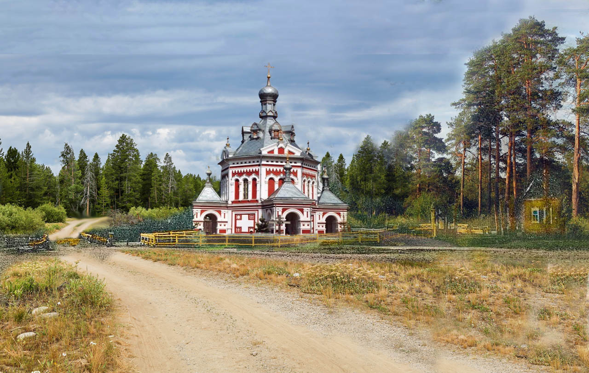
Коллаж фото часовни Святой Варвары, которая в 50-е годы моего детства была превращена в гараж и парковку для машин собирающих жидкие отходы.
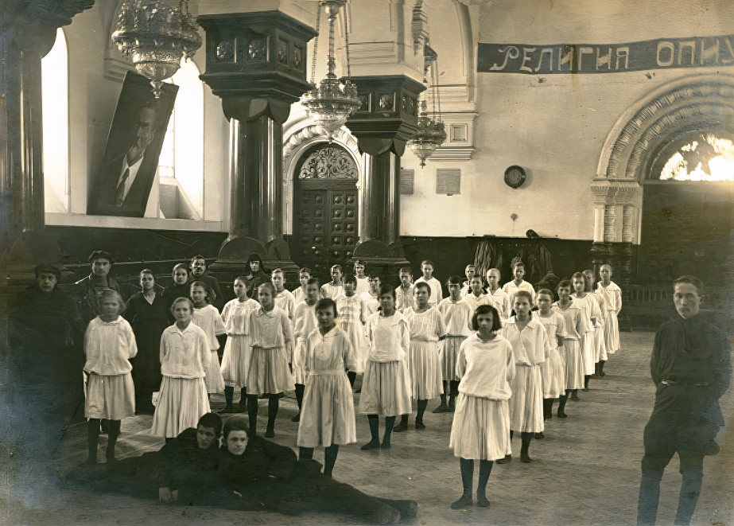
Напротив храма была сооружена богадельня, которую заняли большевики для своих нужд.
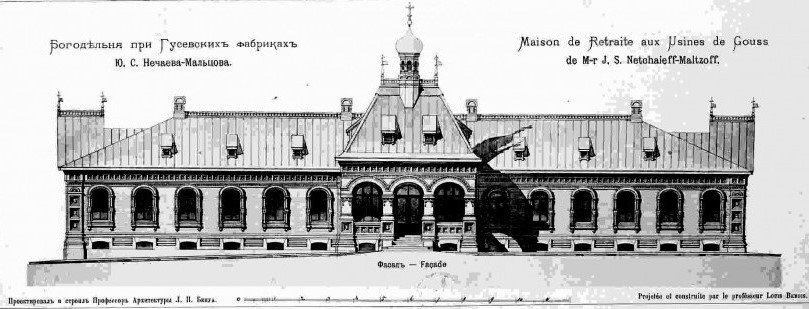
Здание богадельни при храме первоначально было каменным, одноэтажным, с высокой кровлей типа «епанча», середину венчала глава с крестом домовой церкви.
В 1930-е годы богадельню перестроили для нужд городской власти, кровли и главу разобрали, был надстроен второй, деревянный этаж из брёвен. Центральная часть второго этажа выполнена из кирпича и четырёх колонн, в духе эклектики, что было нечастым явлением, особенно в провинции.
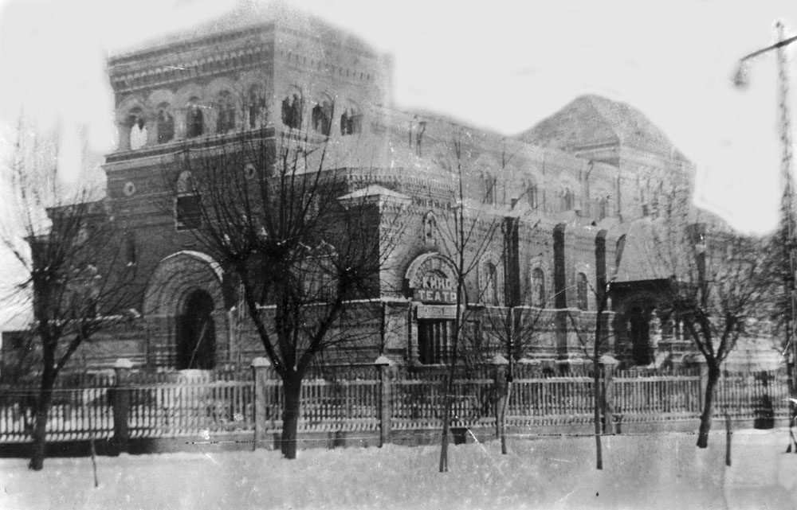
В пору моего детства и юности (конец 50-х и 60-е годы) в храме был кинотеатр и я с благоговением читал на плакате из красного ситца о кино, что оно важнейшее из искусств, полагая, что это здание для кино специально построено. В левом нефе был буфет с пивом, пирожными из сладкого маргарина и другой закуской. Грязные чёрные бочки с пивом привозили с местного пивзавода на конной повозке и выгружали в огороженный досками дворик на грязь вперемешку с конским навозом. Выпить пару кружек пива перед сеансом с обязательным показом киножурнала Новости дня и за счёт этих самых новостей было шиком для трудящихся стекольных заводов и ткацких фабрик..
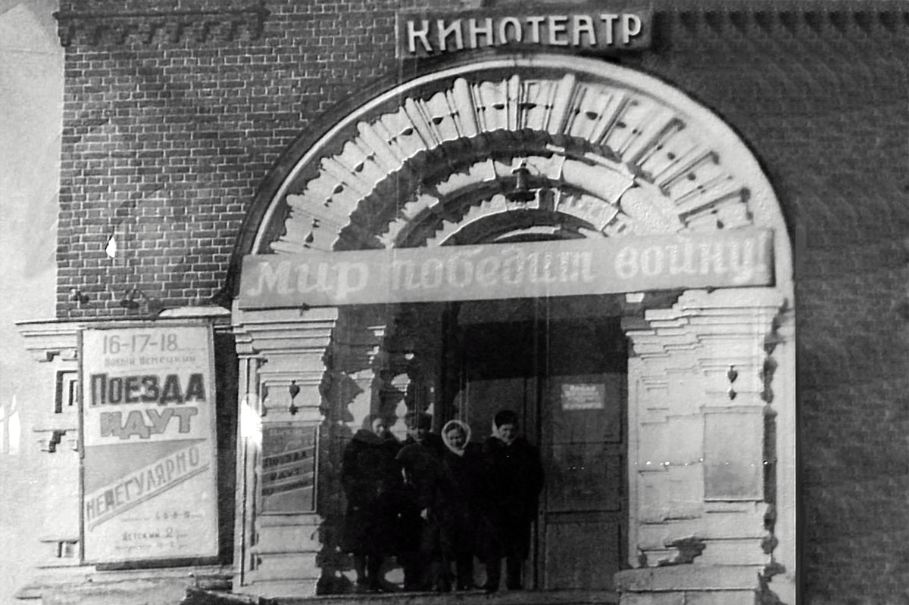
Фото строителей коммунизма из Гусь-Хрустального у входа в кинотеатр на ступенях порушенного храма, 1962 год.
В 1950-60-е годы в цокольном помещении храма находился цех по разливу безалкогольных напитков, а в 1969 году он был сдан в аренду горторгу. В 1967 году из здания выехал кинотеатр, в 1971 году - музыкальная школа, а в последующие годы и склады горторга. В 1974 году, на основании решения исполкома Владимирского областного Совета, музей Хрусталя, как Гусь-Хрустальный филиал, вошел в состав Владимиро-Суздальского музея-заповедника, и было решено перенести его в собор. Десять лет в храме проводились реставрационные работы. Пережив страшные годы разрушения и забвения, великолепное архитектурное творение Бенуа открыло новые страницы истории, найдя применение в качестве музея .
В 1970 году Владимиро-Суздальский заповедник берёт собор под свою опеку. Последовавшие реставрационные работы длились на протяжении 10-ти лет (с 1973 года). 18 мая 1983 года Музей хрусталя в Георгиевском соборе принял первых посетителей, а в августе этого же года полотно "Страшный суд" В.М. Васнецова (?), находящееся четыре года на реставрации, заняло первоначальное место на западной стене Георгиевского храма. Восстанавливала картину группа реставраторов во главе с замечательным ленинградским изографом А. Я. Казаковым, известным по восстановлению росписей Исаакиевского собора, дворцов в Петергофе и Пушкине. Ныне в здании Георгиевского храма размещён Музей хрусталя, филиал Владимиро-Суздальского музея-заповедника. Заходя в здание храма, посетитель невольно обратит внимание на пол. Пол собора выложен метлахской плиткой из Германии, которая хорошо сохранилась до наших дней. Внутри собора мы можем видеть три нефа, разделённые колоннами из чёрного горного лабродорита. Высота центральной составляет 16 метров. Высокий потолок центральной части собора позволил проделать в стенах верхнего яруса ряд окон, что обеспечило дополнительное внутреннее освещение в светлое время суток. В вечерние часы в соборе включались 12 электрических хрустальных люстр, которые бесследно исчезли после событий 1917 года. По счастливой случайности, на Гусевском хрустальном заводе (где и были изготовлены люстры для храма) сохранилась 13-я, которая считалась образцом. Сегодня именно она и висит в храме. Кстати, каждая хрустальная люстра весила 350 кг.
Власть большевиков делала с населением России всё, что хотела и вносила в символику Гусь-Хрустального свои наименования. Такие малые города становились беспросветными коммунистическими вотчинами. Такими они остаются и ныне.
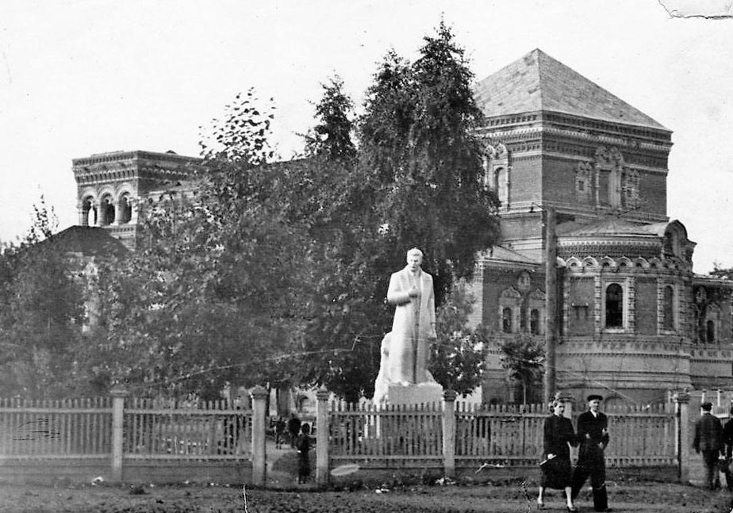
После того как скинули купола с Георгиевского храма, большевики установили памятник диктатору на его территории..
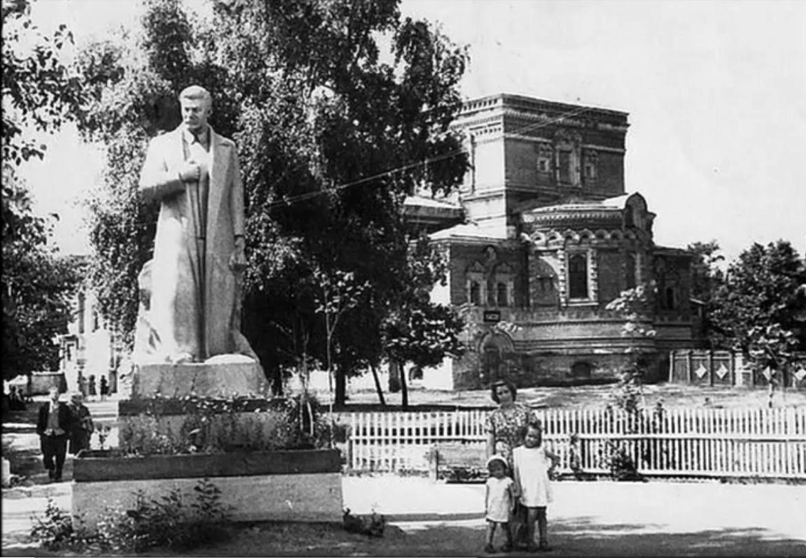
Вскоре территория Храма, где установили диктатора была обобщена, через несколько лет скинули и сам памятник, установив на его место к 50-летию советской власти символ молота и серпа, олицетворяющий единство рабочих и крестьян в борьбе на пути к бесклассовому обществу. Но и его вскоре убрали.
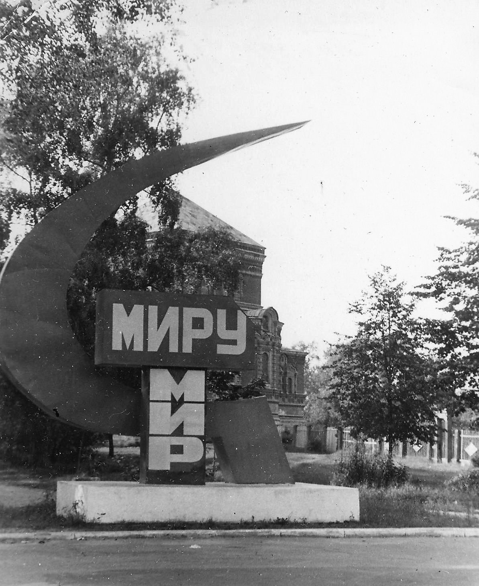
Этот снимок серпа я сделал в 1968 году, когда советские танки входили в Прагу.
Я увлекался фото, не был комсомольцем, но и не политически активным юношей..
Однако происходящее было противоречиво. И это лезло в закрытые глаза моих земляков.
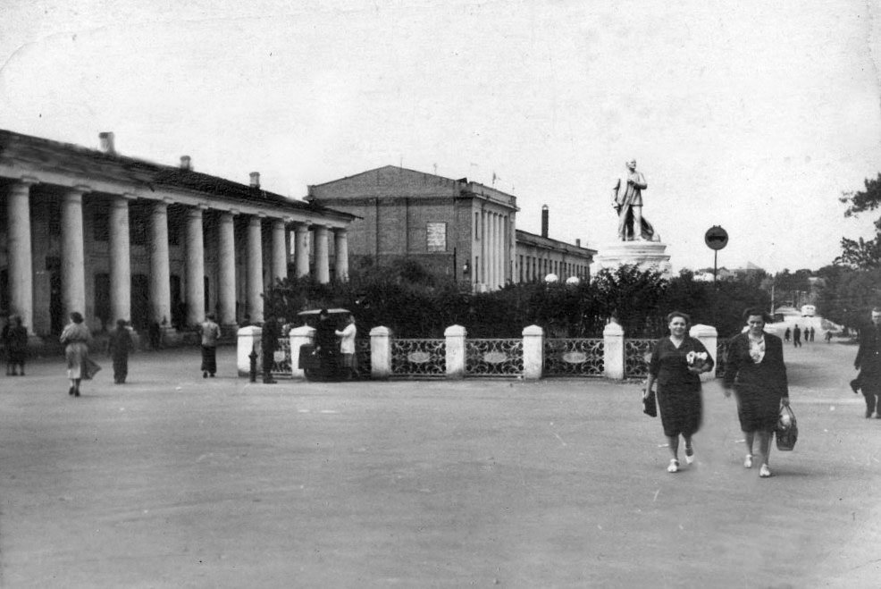
И, конечно, в центре города Ленин.
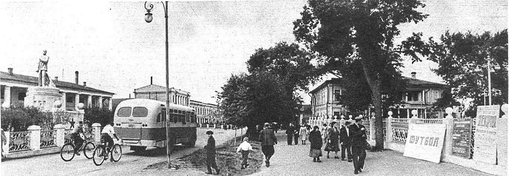
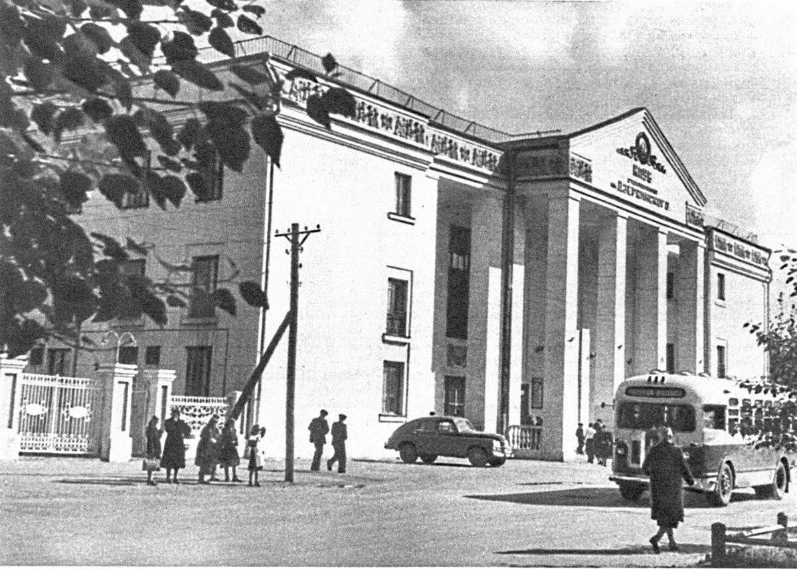
После войны в Гусь-Хрустальном совместно с военнопленными построили завод для выпуска оконного стекла и рядом Дом культуры.
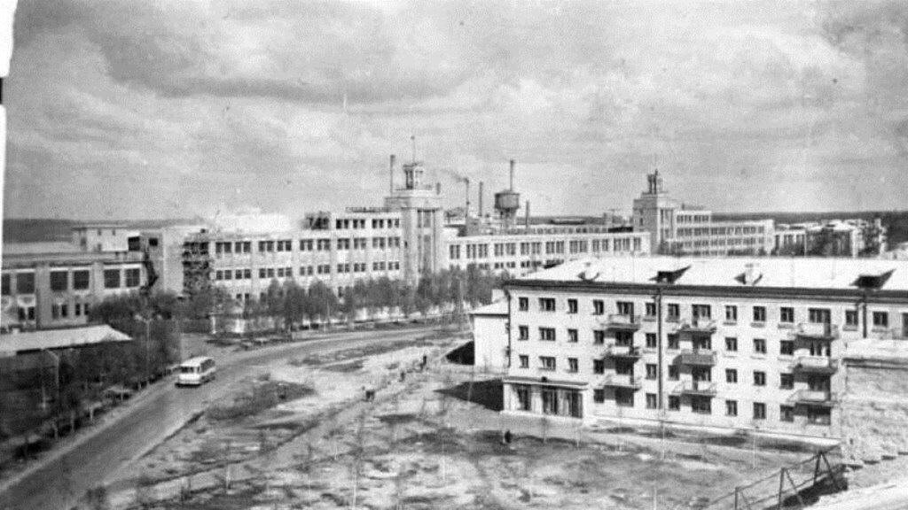
Я с 13 лет ждал этот самый Коммунизм, про который постоянно вещали в киножурналах перед фильмом, и верил в яблоки на Марсе. Мало обращал внимание на дом, семью и другие основополагающие для общества ценности - рвался в космос, в науку, в атаку...
Теперь тоже обманывают, вещая посетителям музея, что художественный хрусталь - главное...
Хотелось бы иногда, в отпуске, зайти в Храм и перед святынями попросить Господа простить мне вольные и невольные грехи мои, что ходил в Храм смотреть Чапаева и, что в Армию сам пошел, хотя и по этапу..., поставить свечи, в другой, восстановленной после 1985г., городской церкви, где 50 лет располагался гараж городской пожарной команды или в часовенке по дороге на погост, где располагался гараж ассенизаторской службы города.
Отцы основатели закладывая завод и проектируя его социальное развитие имели ввиду, что бокалы и другую посуду должны делать мастера, художники своего дела. Им полагался Храм и удобное жильё. Чтобы каждый, кто будет держать бокал из Гусь-Хрустального и желать кому-то счастья, мог представлять себе, что бокал создан мастером после отдыха в удобном доме и посещения Храма..
Однако пришла советская эпоха и превратила художников в работяг, которые в основном стали производить для себя машинным способом гранёные стаканы и стопочки для водки и самогона. Религия же была объявлена опиумом и в храме стали крутить "художественные" фильмы и новости с многочисленных фронтов: военных, промышленных, сельскохозяйственных...
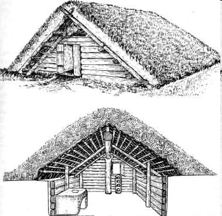
Жильё моих предков вплоть до ХХ века: землянки и полу землянки, да печь в них по-чёрному.
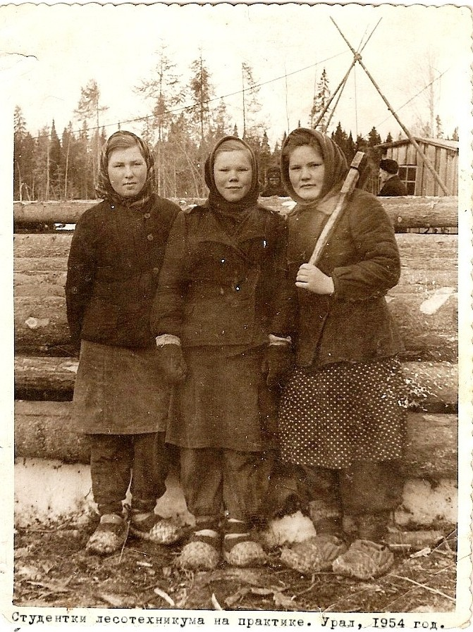
1954 год, девушки на лесоповале. Наверное рубят лес на закупку инновационных технологий и материалов..
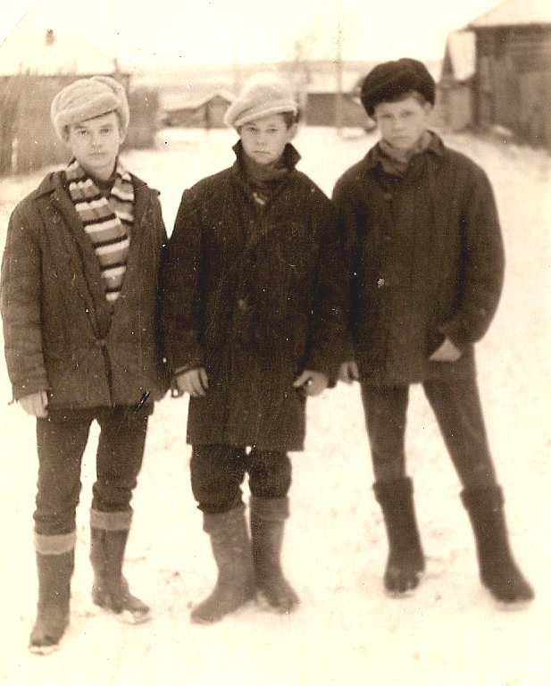
Мои земляки и другие молодые люди в 1961 году стали носить шарфы.

Моя фото городского Совета и его Исполкома в 1967 году..
На бывшей богадельне разбитое стекло на крыше. Наверное, авангарду строительства коммунизма в Гусе в это время некогда было заниматься такими пустяками как мансардное окно.
Полагаю что, население России после участия в победах под руководством большевиков было запугано, обмануто и обворовано. Его сознание было искажено и оно не смогло до сих пор стать здоровым обществом с ценностями для устойчивого развития.
После распада страны в1991 году на той же богадельне водрузили триколор, а с крыши убрали серп и молот. И это не кого не смущает. Несогласных практически нет.
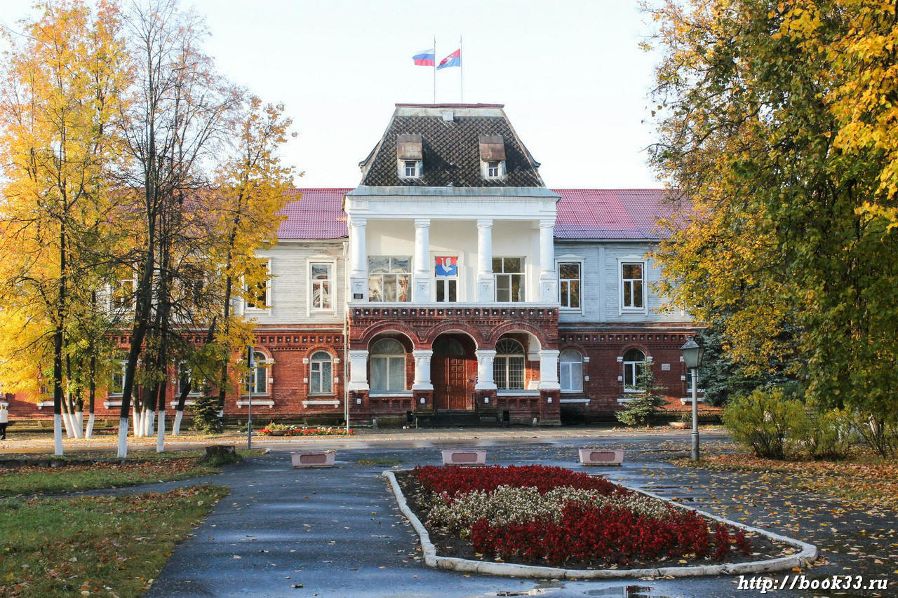
В Георгиевском соборе уже нет кинотеатра , но и церкви его не передали
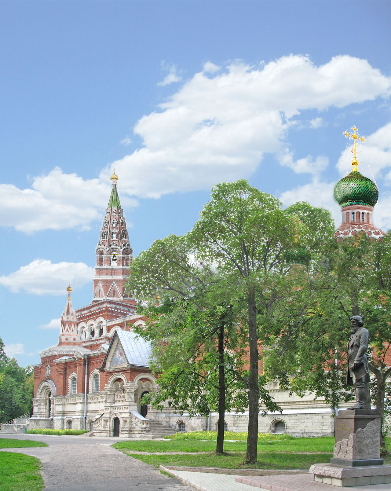
Коллаж Георгиевского собора от 19 апреля 2020 года. Хочу, чтобы в 2036 году Храм радовал округу своими куполами и звоном колоколов.
Сегодня в центре города находится обезглавленный Георгиевский собор, в котором выставлена стеклопосуда местного производства.
Надеюсь в 2036 году собор восстановят на федеральные средства, так как разрушали местные большевики по указанию сверху.
Ситуация и в 2019 году не радостная..

Население не научилось жить свободно и самостоятельно. Смута и в делах, и в головах населения города. На фото с городского сайта от 9 мая 2019 года под памятником Ленину в центре города жителей приветствуют представители почти демократической власти, предпринимателей и духовенства.
Особенный гражданский мир в стране победивших большевиков сохраняется по традиции и, видимо, только в следующие 100 лет ленинская скрепа сойдёт на нет.
Да и в целом в России не понятно, "... что делать с 2 млн. 200 тысячами госслужащих, которые привыкли функционировать в коррупционной среде? Что делать с 5 млн. силовиков, заточенных на репрессии? Что делать с экспертами, запрограммированными на обслуживание власти? Что делать с интеллектуалами, паразитирующими в кремлевских советах и «палатках»? Что делать с «мастерами культуры», выпрашивающих у власти, как Андрон Кончаловский, «ориентир»? Куда их всех девать? Где взять тех, кто эту накипь может заменить?" из размышлений Лилии Шевцовой.
Что делать понятно - мобилизовать на проведение радикальных реформ, да некому. Всё что осталось активного от прежнего режима само организовалось и приступило к обогащению. И если учесть, что за последние 30 лет идёт активная иммиграция способной молодёжи на Запад и оформился значительный слой хорошо упакованных и устроившихся лиц, которым удобнее жить без международных институтов, то наше благополучие (социальное здоровье) для современной активной жизни в обозримой перспективе не улучшится.
Апрель 2020 года